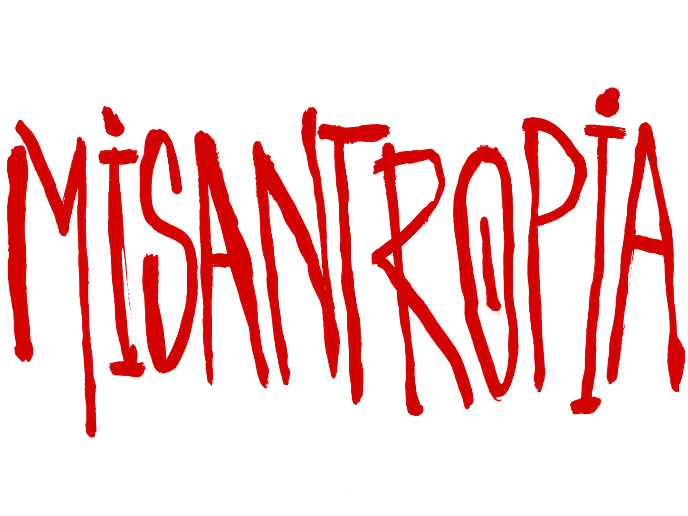

N.
NADINE
A esperança de todos. Uma jovem que tenta sustentar um mundo inteiro enquanto luta contra as próprias dúvidas.
UMA TRAGÉDIA EM TRÊS ATOS

O FIM NÃO COMEÇA
QUANDO TUDO ACABA.
COMEÇA QUANDO
NINGUÉM MAIS CONFIA.
O MUNDO ESTÁ EM RUÍNAS
Em um mundo marcado pela dor e pela tragédia, a humanidade está perto de presenciar o próprio fim. Então surge uma jovem capaz de reacender a fé que todos haviam perdido.
Mas até onde as pessoas vão por ela? Fé também pode virar controle e, quando todos procuram alguém para culpar, a verdade talvez seja a primeira vítima.
Em quem confiar quando nada parece ter salvação?
O PESO DA ESPERANÇA
Todos exigem um milagre daquela que não pediu para ser símbolo. Aqui jaz a fé de um mundo que esqueceu como confiar em si mesmo.
"Salve-nos." É o que eles dizem todos os dias. Mas ninguém pergunta o que acontece quando a única pessoa sã decide que já não quer salvar ninguém.
"Eles não amam a mim. Amam o alívio que sentem quando olham para o meu rosto."
O ÓDIO
VEM DE
DENTRO.
Não é só sobre o fim do mundo.
É sobre aquilo que fazemos uns com os outros antes dele.
Salvadores, sobreviventes e aqueles que aprenderam a transformar o medo em poder. Ninguém está completamente a salvo de si mesmo.
A esperança de todos. Uma jovem que tenta sustentar um mundo inteiro enquanto luta contra as próprias dúvidas.
Dono da emissora que dita o que o povo vê. Para ele, ser amado talvez seja apenas outra forma de dominar..
Conselheira de Nadine. Com espírito materno, acolhe, compreende e tenta enxergar a garota por trás do símbolo, mesmo quando o mundo deixa de fazê-lo.
Presidente de uma nação condenada ao fracasso. Não está no poder por merecimento, e sim por ter agradado as pessoas certas: é mais um produto do que uma figura de poder.
Jornalista recém-formado, ingênuo e em busca da matéria que vai mudar sua vida. O alívio cômico de um mundo que não tem muito o que celebrar.
Uma entidade que tira o ar de quem a vê. Está sempre presente ao lado da jovem e parece conhecer uma verdade que ninguém quer ouvir.
OS PERSONAGENS SÃO MAIS DO QUE PARECEM. OU MENOS.
PROPRIEDADE DE *******
Em uma nação sem certezas, a emissora de ******* virou a única voz em que todos ainda querem acreditar. Ele não conta a história: escolhe qual versão será a história.
PLANTÃO ESPECIAL
Nadine é a esperança desta nação. Fique conosco: só esta emissora chega perto dela.
TROQUE DE CANAL. A MESMA NOTÍCIA NUNCA É A MESMA.
Telejornal da manhã. Só as notícias em que o povo precisa acreditar.
Debate ao vivo. Alguém sempre sai condenado antes do intervalo.
A escolhida diante das câmeras. As perguntas já vêm prontas.
Documentos que “vazaram”. Vazaram porque alguém quis.
SALA DE CONTROLE DA ÍRIS
O sinal está instável. Manchetes perigosas estão subindo para o ar. Você tem poucos segundos para decidir o que o povo pode ver.
MANCHETE #1
ESCOLHA RÁPIDO...
QUEM CONTROLA A TELA, CONTROLA O MEDO.
Conheça o elenco e a equipe de Misantropia.
ESPAÇO RESERVADO PARA AS FOTOS DO ELENCO
UM JOGO DE ATENÇÃO
Ela vai aparecer. Você terá poucos segundos para encontrá-la. Não confie no que seus olhos deixam de ver.
AGUARDANDO O INÍCIO...
20 SEGUNDOS. NENHUMA SEGUNDA CHANCE. VOCÊ FOI AVISADO.
Este documento requer autorização especial para ser desbloqueado.
CHAVE INCORRETA. ACESSO NEGADO.
NÃO CONFIE NA PRIMEIRA VERSÃO.
Três depoimentos. Uma verdade incompleta. E uma decisão que não poderá ser desfeita.
UMA HISTÓRIA EM TRÊS ATOS
Dentro do envelope, uma única frase: “Amanhã, alguém será condenado por uma verdade que ninguém teve coragem de contar.”
Você pode abrir o arquivo. Mas, a partir daí, cada escolha fará parte do julgamento.
O QUE VOCÊ ESCOLHE ACREDITAR TAMBÉM É UMA EVIDÊNCIA.
Algumas histórias terminam quando as cortinas se fecham.
Outras continuam depois que você vai embora.